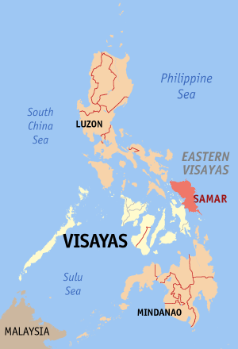

Samar is the third largest island in the Philippines. Located in eastern Visayas, within central Philippines.
The island is divided into three provinces: Samar province (the western two-fifths of the island of Samar),
Northern Samar province, and Eastern Samar province. These three provinces, along with the provinces on the nearby
islands of Leyte and Biliran are part of the Eastern Visayas region.
Samar is the easternmost island in Visayas. The island is separated from Leyte by the San Juanico Strait, which at its
narrowest point is only about 2 kilometres (1.2 mi) across. This strait is crossed by the San Juanico Bridge. Samar lies
southeast of the Bicol Peninsula on Luzon, the country's largest island; the San Bernardino Strait separates the two.
To the south of Samar is the Leyte Gulf, the site of the Battle of Leyte Gulf, one of the most decisive naval battles
during the Second World War. The gulf opens out into the Philippine Sea, found to the east of Samar and is part of the
Pacific Ocean.
On June 19, 1965, through Republic Act No. 4221, Samar was divided into three provinces: Northern Samar, Western Samar and
Eastern Samar with Catarman, Catbalogan City and Borongan City as its capital, respectively.[4] Thus, June 19 is a regular
non-working local holiday of the said provinces
